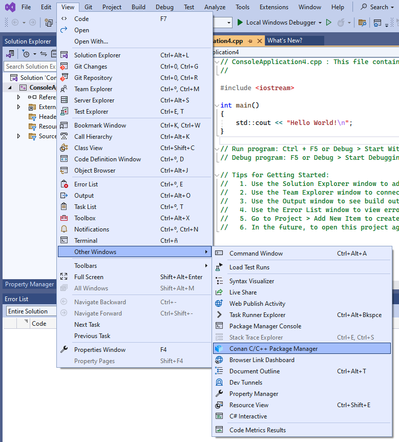
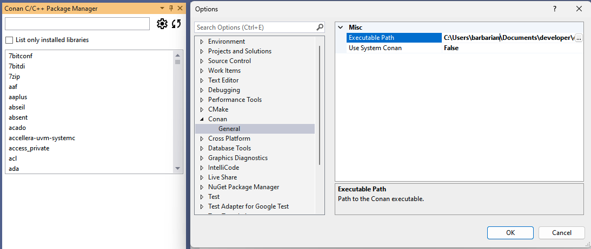
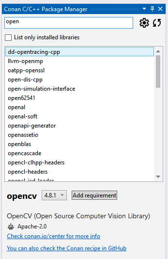
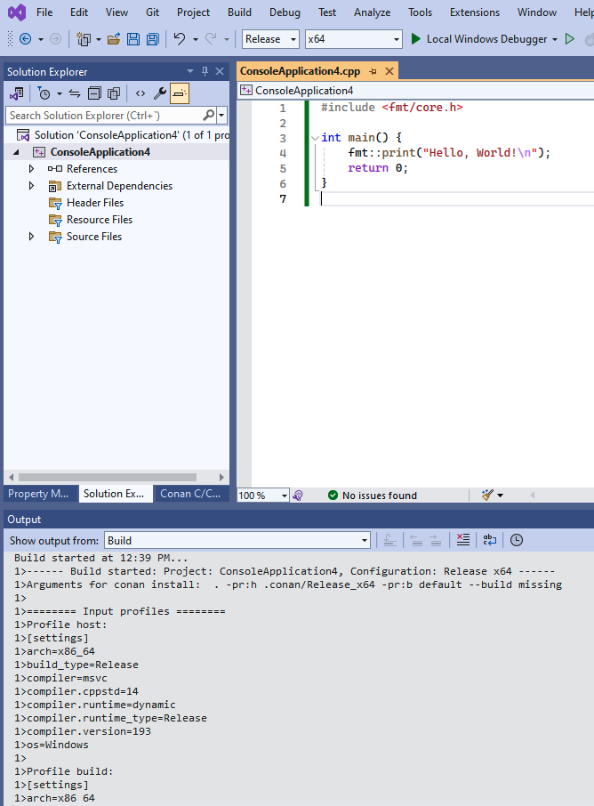

Visual Studio¶
Visual Studio¶
Recipe tools for Visual Studio¶
Conan provides several tools to help manage your projects using Microsoft Visual Studio.
These tools can be imported from conan.tools.microsoft and allow for native
integration with Microsoft Visual Studio, without the need to use CMake and instead
directly using Visual Studio solutions, projects, and property files. The most relevant
tools are:
MSBuildDeps: the dependency information generator for Microsoft MSBuild build system. It will generate multiple
xxxx.propsproperties files, one per dependency of a package, to be used by consumers using MSBuild or Visual Studio, just by adding the generated properties files to the solution and projects.MSBuildToolchain: the toolchain generator for MSBuild. It will generate MSBuild properties files that can be added to the Visual Studio solution projects. This generator translates the current package configuration, settings, and options, into MSBuild properties files syntax.
MSBuild build helper is a wrapper around the command line invocation of MSBuild. It will abstract the calls like
msbuild "MyProject.sln" /p:Configuration=<conf> /p:Platform=<platform>into Python method calls.
For the full list of tools under conan.tools.microsoft please check the
reference section.
Conan extension for Visual Studio¶
There’s an extension available in the VisualStudio Marketplace that’s compatible begining from Visual Studio version 2022. With this extension, you can browse Conan packages available in Conan Center, add them to your project, and they will be automatically installed before building your projects.
Note
The Visual Studio extension is only compatible with C/C++ projects based on MSBuild. It will not work with CMake-based projects or projects using other technologies. For CMake-based projects, please refer to the cmake-conan dependency provider.
Installation¶
The Conan Visual Studio Extension can be installed directly from within Visual Studio:
Open the Extensions menu.
Select Manage Extensions.
Search for “Conan” in the Online marketplace.
Download and install the extension.
Alternatively, you can download the latest release from our releases page and install it manually.
Initial Configuration¶
After installing the Conan extension, you can access it from the “Conan” tool window in Visual Studio. To do so, go to View > Other Windows > Conan C/C++ Package Manager.
Initially, you will need to configure the Conan executable to be used by the extension. By clicking on the configure button (gear icon) from the extension’s window, you can set up the path to the Conan client executable. You can either specify a custom path or choose to use the Conan client installed at the system level.
Once you have configured the Conan client, the extension is ready to use, and you can start adding libraries to your project.
Searching and Adding Libraries¶
Once configured, the library list in the Conan tool window becomes active, and you can search for Conan packages using the search bar. Selecting a library will allow you to view its details, including available versions and integration options.
If you now click the Add requirement button, the extension will add a conanfile.py and a conandata.yml to your project with the necessary information to install the selected Conan packages. It will also add a prebuild event to the project to install those libraries on the next compilation of the project.
At any point, you can also use the refresh button (circular arrow icon) to update the list of available packages in Conan Center.
Now, if you initiate the build process for your project, the pre-build event will trigger Conan to install the packages and inject the necessary properties into the project, enabling Visual Studio to compile and link against those libraries.
Warning
The initial compilation might fail if Visual Studio does not have sufficient time to process the injected properties. If this happens, simply rebuild the project, and it should build successfully.
For a more in-depth introduction to the Conan Visual Studio extension with a practical example, please check this example in Conan blog.
See also
Reference for MSBuildDeps, MSBuildToolchain and MSBuild.